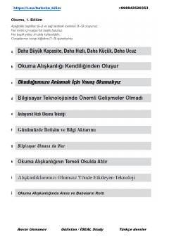

BOTurk tilidan B1 darajasidagi o'qish, tinglash va yozish ko'nikmalarini rivojlantiruvchi o'quv qo'llanma.
Ushbu qo'llanma B1 darajasidagi turk tilini o'rganuvchilar uchun o'qish, tinglash va yozish ko'nikmalarini rivojlantirishga mo'ljallangan. Kitob turk tilini mustaqil yoki darslarda o'zlashtirish uchun amaliy mashqlar va matnlarni o'z ichiga oladi.